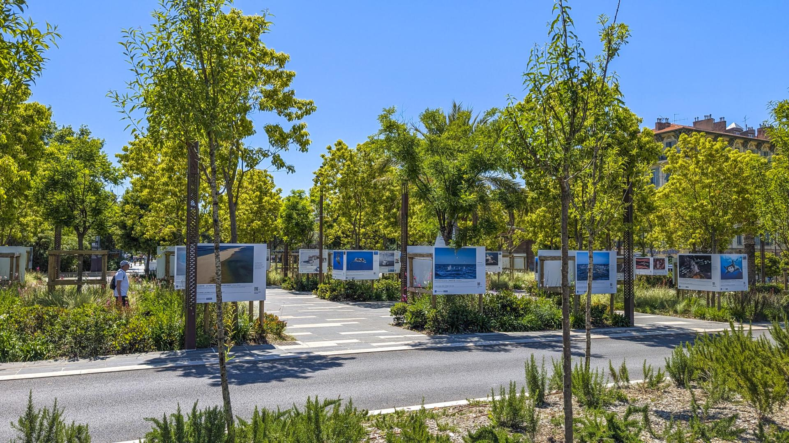
Exposition & média
Des grilles du Sénat aux rives de la Méditerranée, l'objectif d'association donne à voir l'urgence et la beauté du monde marin
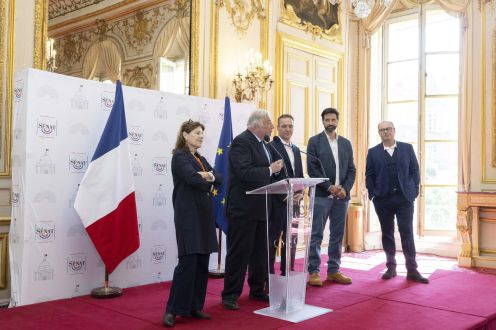
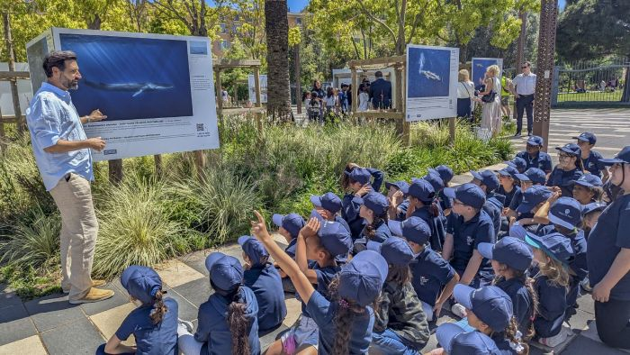
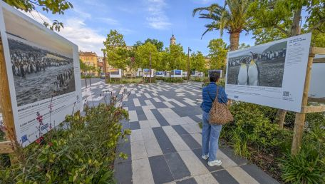
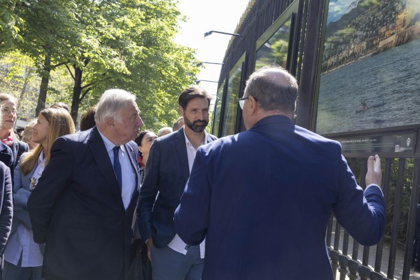
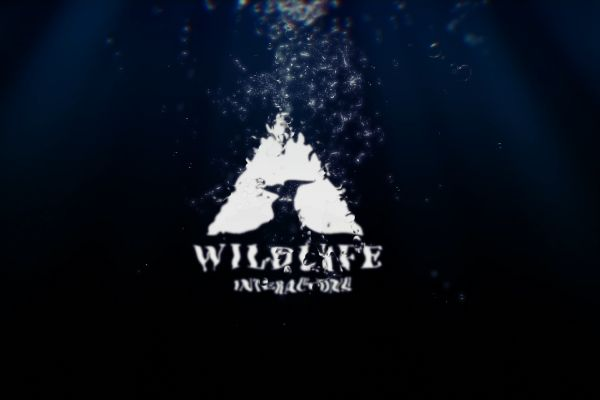
Nos médias, votre relais d'action
Nous contacterÀ travers l'exposition itinérante « L'Océan Vivant », Wildlife Interactions fait vivre ses messages de sensibilisation au cœur de l'espace public. Accueillie par le Sénat sur les grilles du Jardin du Luxembourg, puis déclinée à Nice à l'occasion de l'UNOC 3, elle a rassemblé plusieurs millions de visiteurs. Ce voyage visuel, de l'équateur aux pôles, explore la splendeur des océans tout en sensibilisant le grand public aux enjeux environnementaux contemporains. Chaque image est accompagnée de légendes rédigées par les experts scientifiques de l'association.
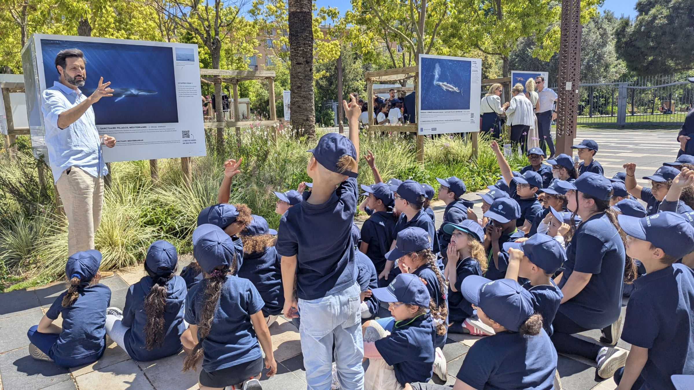
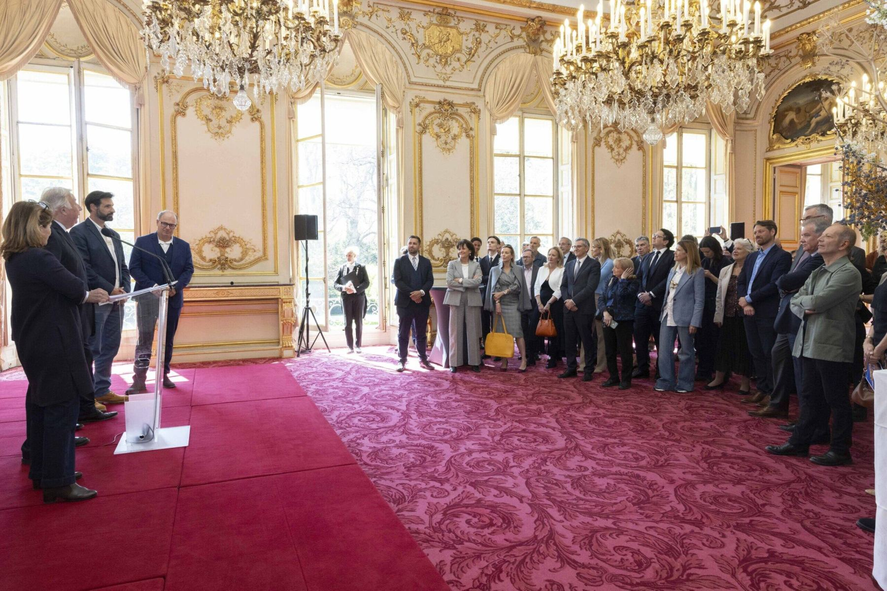
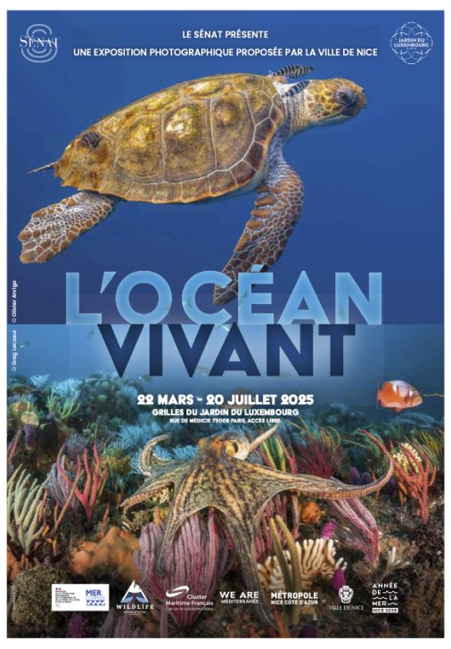
Les missions et les messages portés par Wildlife Interactions ont été relayés par plusieurs médias télévisés, désireux de porter à l'écran la beauté fragile du monde marin. Ces reportages permettent de faire connaître au grand public les expéditions scientifiques menées en Méditerranée, en Arctique et en Antarctique. En donnant la parole aux chercheurs et experts de l'association, ils contribuent à ancrer les enjeux climatiques dans le débat public. Chaque sujet TV devient ainsi un relais essentiel pour amplifier la mission de préservation de Wildlife Interactions.
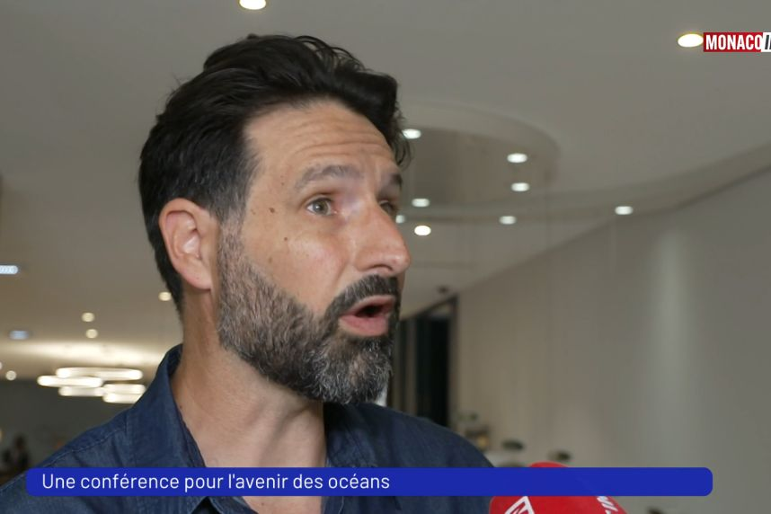
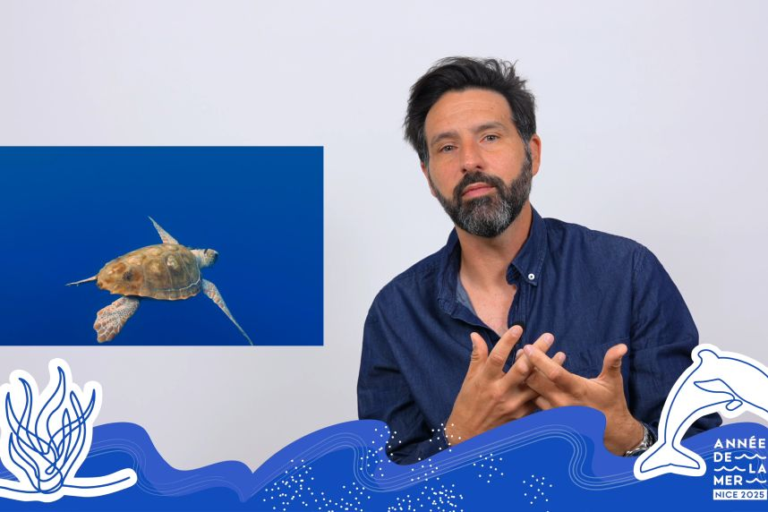
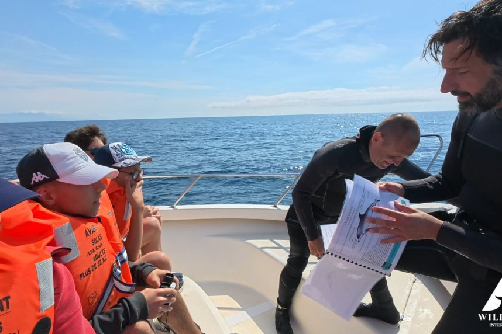
L'engagement de Wildlife Interactions a trouvé sa place dans les pages de magazines de référence, tels que Géo et Héros. Ces publications offrent un espace narratif approfondi pour raconter les expéditions et les missions qui nourrissent le travail de l'association. À travers reportages et portfolios, elles permettent de toucher un lectorat curieux et engagé, sensible aux récits de terrain. Cette présence éditoriale renforce la portée du message porté collectivement par l'association et son réseau d'experts.
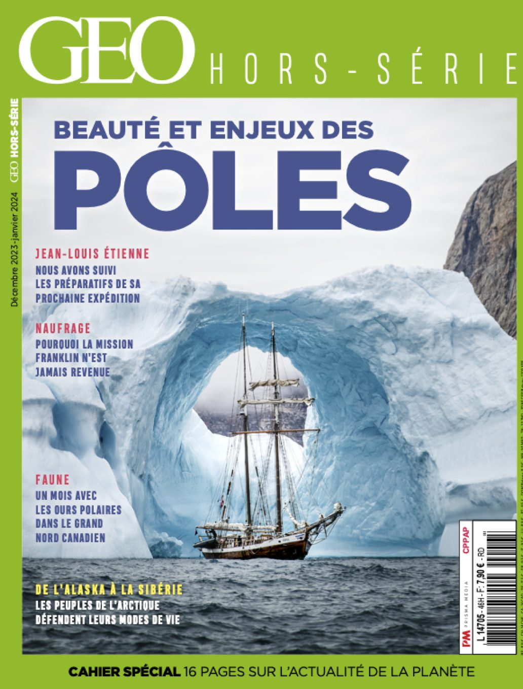
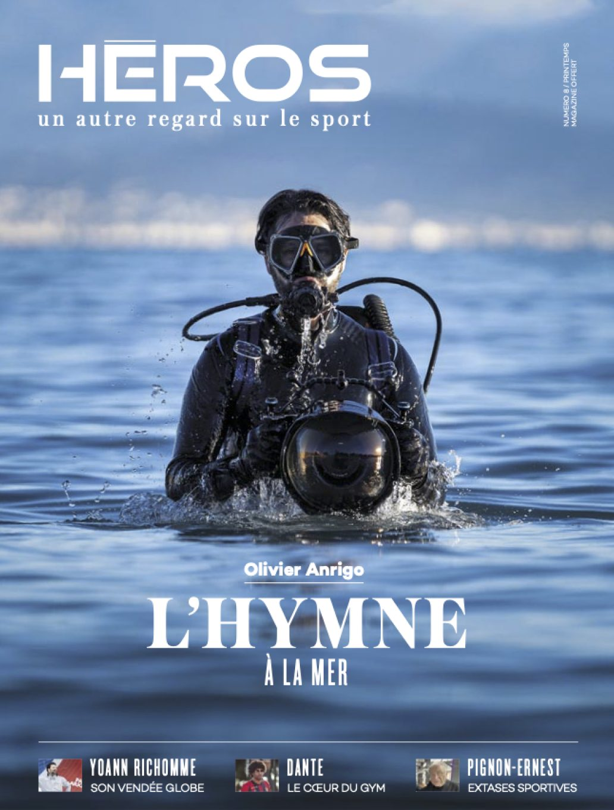